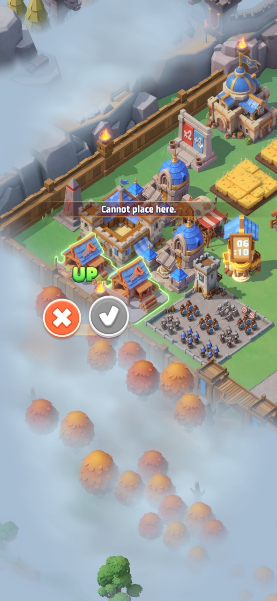
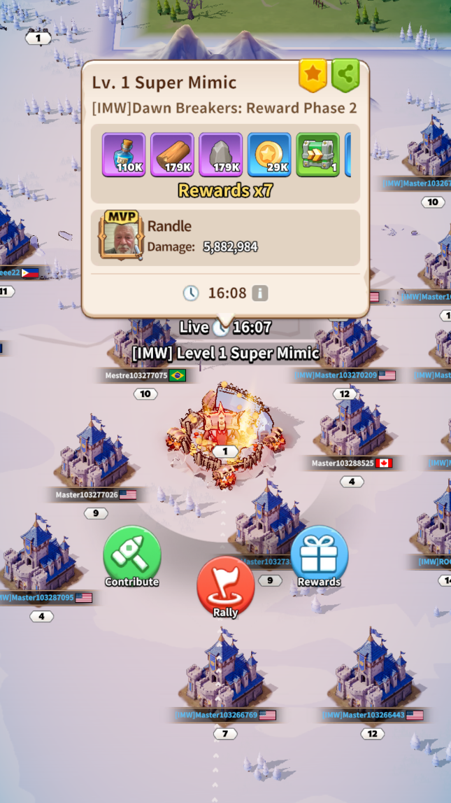
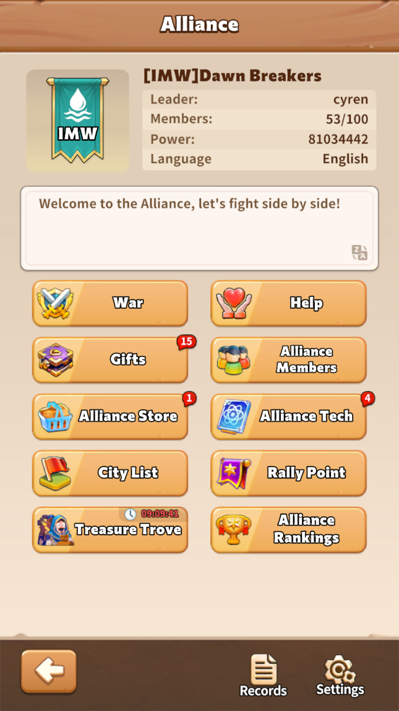
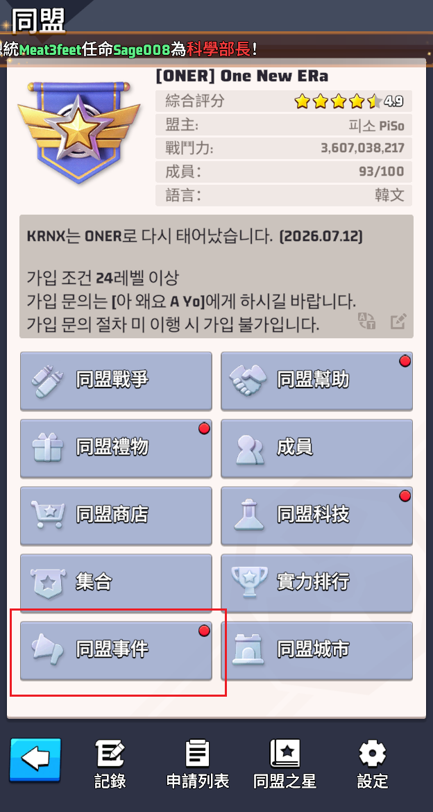

最近在意
点击编辑，写下一件事
可以是一个目标、一个人，或一个刚冒出来的念头。
RIGHT NOW
人会改变，这里只负责诚实地记录当下。
最近在意
可以是一个目标、一个人，或一个刚冒出来的念头。
正在学习
记录进度，也记录为什么想学。
当前心情
天气、情绪、能量，都可以写在这里。
ON REPEAT
有些旋律，是生活的秘密注脚。
TRACK 01
孙燕姿
写下你为什么喜欢它，或第一次听见它的时刻。
TRACK 02
孙燕姿
适合在什么样的天气、路上或心情里播放？
TRACK 03
鹿先森乐队
留一个位置给最近循环最多的那首歌。
STORIES I KEEP
看过的故事，也悄悄参与塑造了我。
最近正在看，挺喜欢的。
之前看过，也觉得不错。
也许是会愿意反复重看的那一部。
LITTLE RITUALS
重复的小事，构成了生活真正的纹理。
它如何让一天开始得更舒服？
你保持专注的小方法。
也许不起眼，却很像你。
用什么方式和今天告别？
FIELD NOTES
不必正确，不必完整，先把念头留下来。
为什么一边抱怨工作辛苦，一边羡慕别人双休，一边又不离开当前的工作呢？应该是自己不够勇敢。虽然不愿承认，但潜意识却也认为这份工作没那么糟。说到底，还是没被逼到那个份儿上且懒惰，所以一直迟迟没有行动。唉，到底该怎么办呢？
早上起来的时候，突然想感谢过去的自己。他做了很多辛苦的事，才让今天的我能稍微轻松。那么今天的我，为了未来的我，也要加油才行！
“这个世界上没有别人，每个人都是轮回中的我。”这句话好震撼人心啊！
GAME DESIGN NOTES
记录值得继续推演的机制灵感。

2026年9月7日 · 基地经营
新增建筑协同机制：同类生产建筑相邻时提升产出，并在摆放与经营界面中明确展示加成。
2026年9月8日 · 同盟社交
新增“同盟事件”功能入口，集中展示进行中、即将开始及待领奖活动，让成员更快找到值得参与的同盟内容。



A NOTE TO SELF
亲爱的未来的我：
这里还空着。等一个安静的晚上，写下你现在相信的事、想守住的东西，以及希望未来不要忘记的自己。
—— 此刻的我